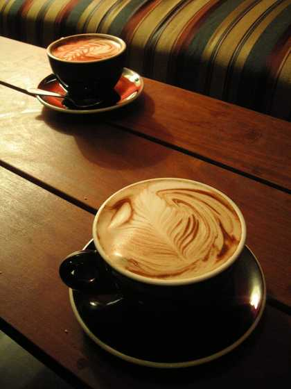
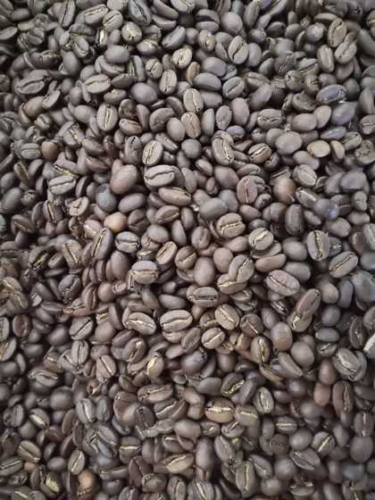
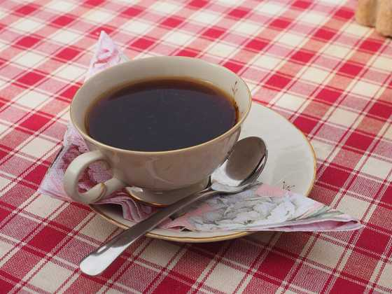
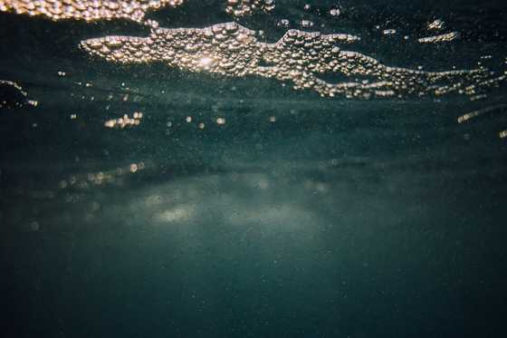

店のこと
お母さんが食べさせたいクレープ
マルミカフェは、千葉県四街道市栗山にある小さなテイクアウト専門のクレープ店です。Instagramのプロフィールでは、「国産小麦、全粒粉使用」「お母さんが子供に食べさせたいクレープ」と紹介されています。
- 国産小麦・全粒粉を使った生地(Instagramプロフィールより)
- テイクアウト専門の小さなお店
- 場所は「丸巳建材」の敷地内(Instagramプロフィールより)
店名の意味や創業の経緯は確認できていません。

メニュー
メニュー・提供内容
Instagramには「メニュー」「限定メニュー」のハイライトがありますが、品目と価格は確認できていません。営業時間・定休日・価格は準備中です。

クレープ(イメージ)
国産小麦・全粒粉を使った生地のクレープ。具体的な品目・価格は準備中

限定メニュー
Instagramに「限定メニュー」のハイライトがあります。内容は準備中

ドリンクなど
取り扱いの有無を含めて準備中








口コミ
お客様の声(イメージ例)
イメージ例
全粒粉の生地がもちっとしていて、甘さもやさしい。子供と半分こして食べました。
イメージ例
持ち帰りでさっと買えるのがうれしい。限定メニューをのぞくのが楽しみです。
イメージ例
小さなお店であたたかい雰囲気。おやつの時間にまた寄りたくなります。
※制作側が作成したイメージで、実際のお客様の声ではありません。